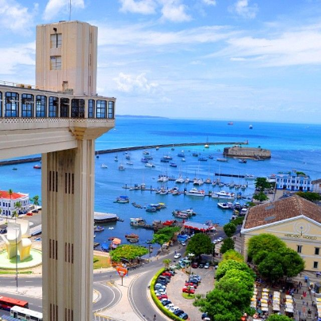

Celi Macêdo | WDD 130
Hello! My name is Celi Macêdo and I am from Bahia, Brazil. I enjoy listening to good music,
and watching movies. I love seafood and "baiana" food. My favorite artist is Tears for Fears.
Salvador

"Salvador (Brazilian Portuguese pronunciation: [sawvaˈdoʁ]) is a Brazilian municipality and
capital city of the state of Bahia. Situated in the Zona da Mata in the Northeast Region of
Brazil, Salvador is recognized throughout the country and internationally for its cuisine,
music, and architecture. The African influence in many cultural aspects of the city makes it
a center of Afro-Brazilian culture. As the first capital of Colonial Brazil, the city is one
of the oldest in the Americas. Its foundation in 1549 by Tomé de Sousa took place on account
of the implementation of the General Government of Brazil by the Portuguese Empire." - wiki